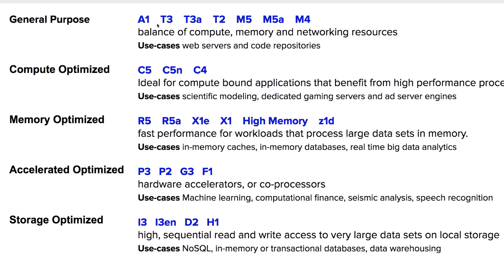
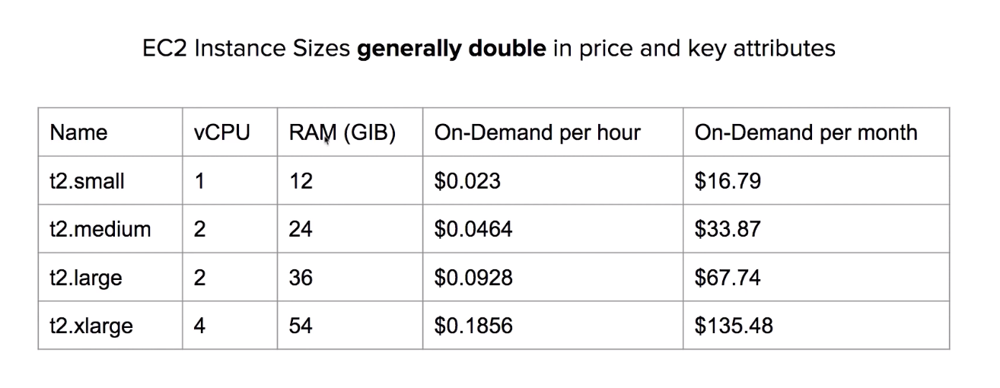
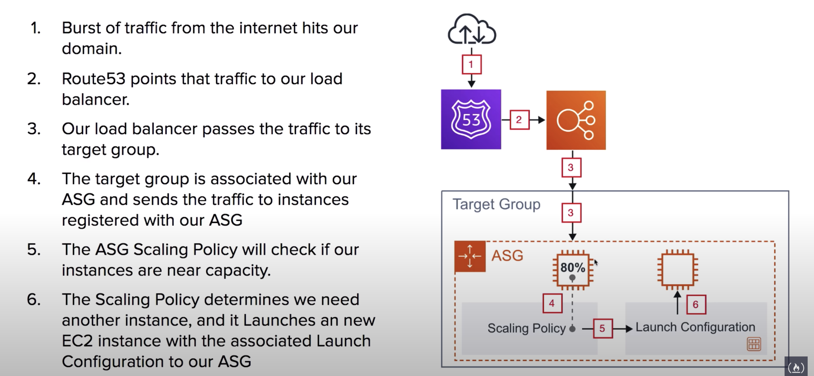

Highly configurable server.
It takes minutes to launch new instances.
Anything and everything on AWS uses EC2 instance underneath.
EC2 instance Types

Instance Sizes generally double in price and key attributes

Instance Profile
You can attach a role to an instance via an Instance Profile
You want to always avoid embedding your AWS credentials when possible.
An Instance Profile holds a reference to a role.
When you select an IAM role when launching an EC2 instance, AWS will automatically create the Instance Profile for you.
Profiles are not easily viewed via the AWS Console.
Placement Groups
Placement Groups let you choose the logical placement of your instances to optimize for communication, performance or durability.
Free.
Cluster
Packs instances close together inside one AZ
Partition
Spreads instances across logical partition.
Each partition do not share the underlying hardware (rack per partition)
Well suited for High Performance Computing (HPC) applications.
Spread
Each instance is placed on a different rack.
When critical instances should be kept away from each other.
Can be multi-AZ.
You can spread up to 7 instances.
User Data
Script that will automatically run when launching the instance.
From within the EC2 instance, if you were to SSH in and CURL this special URL you can see the UserData script:
http://169.254.169.254/latest/user-data
Meta Data
From your EC2 instance you can access information about the EC2 via a special url endpoint at
169.254.169.254
curl http://169.254.169.254/latest/meta-data/public-hostname
curl http://169.254.169.254/latest/meta-data/ami-id
curl http://169.254.169.254/latest/meta-data/instance-type
AMI
EC2 instances <-> AMIs
AMI holds:
- launch permissions: which AWS accounts can use the AMI to launch instances
- template for root volume of the instance (EBS snapshot/Instance Store template)
- A block device mapping, specifying the volumes to attach the the instance when it’s launched.
User Cases
Using Systems Manager Automation you can routinely patch your AMIs with security updates and bake those AMIs.
AMIs are used with LaunchConfigurations. When you want to roll out updates to multiple instances you make a copy of your LaunchConfiguration with new AMI.
When you create a launch configuration, you must specify information about the EC2 instances to launch. A launch configuration is an instance configuration template that an Auto Scaling group uses to launch EC2 instances.
AWS Systems Manager Automation simplifies common maintenance and deployment tasks of EC2 instances and other AWS resources.
You can create an AMI from an existing EC2 instances that is either running or stopped.
AMI Marketplace
You can purchase subscriptions to vendor maintained AMIs.
Choosing an AMI
AMIs are region specific. AMIs have an AMI ID, same configurations in different regions will have different AMI ID.
AMI can be selected based on:
- Region
- OS
- Architecture
- Launch Permissions
- Root Device Volume
- Instance Store(Ephemeral Storage)
- EBS backed volumes
AMIs are categorised as either backed by Amazon EBS, or backed by Instance Store.
Copying an AMI.
The only way you can move an AMI from one region to another is through a COPY command.
Copy AMI lets you choose a destination region.
EC2 Auto Scaling Groups
ASG contains a collection of EC2 instances that are treated as a group.
ASG can exist in only one subnet, but ELB requires at least two.
Automatic Scaling can happen via:
- Capacity Settings
- Health Check Replacement
- Scaling Policies
Capacity Settings
Based on:
- Min
- Max
- Desired Capacity
ASG will always launch instances to meet minimum capacity.
Health Check Replacements
EC2 Health Check Type
ASG will perform a health check on EC2 instances to identify software OR hardware issue.
Based on EC2 Status Check
If an instance is considered unhealthy, ASG will terminate and launch a new instance.
ELB Health Check Type
ASG will perform a health check based on the ELB health check.
ELB can perform health checks by **pinging an HTTP(S) endpoint with an expected response.
Scaling Policies
Three types of Scaling Policies:
Target Tracking Scaling Policy
Maintains a specific metric at a target value:
- Application Load Balancer Request Count per target
- Average CPU Utilization
- Average Network in
- Average Network out
Simple Scaling Policy
Scales when an alarm is breached. For example, “Add foo(a fixed number) instances when bar alarm“
No longer recommended, because it’s a legacy policy, not as robust as scaling policies with steps.
Scaling Policies with steps
Scales when an alarm is breached, can escalates based on alarm value changing.
e.g. If foo < 2 then add 1 instance, if foo < 3 and foo >=2 then add 3 instances.
ASG-ELB Integration
When ASG is associated with ELB, richer health checks can be set.
Classic Load Balancers are associated directly to the ASG.
ALB and NLB are associated indirectly via their Target Groups

Launch Configuration
A launch configuration is set in a way much like when you launch an instance.
AMI, type, IAM roles, SG, storage.
An AMI only saves what the storage/applications look like, but launch configuration takes care of all the settings when an auto scaling group launches an instance.
Launch Configurations cannot be edited. When you need to update your Launch Configuration, you create a new one or clone the existing configuration and then manually associate that new Launch Configuration.
Scaling in/out/up:
- Scaling Up is when you increase the size of an instance. eg: updating Launch Configuration with larger size.
- Scaling In is when you add servers
- Scaling Out is when you remove servers.